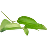

Correspondence Grimoire
Digestion
Also called
Digestive
Dream Connections1
Entities1
Minerals20
Oils78

Cinnamon Leaf Essential OilClary Sage Essential OilClove Essential OilCommon Thyme Essential OilCoriander Seed Essential OilOther Correspondences6
Plants14
Digestion is the body's process of breaking down food into nutrients and energy, moving through the stomach, intestines, liver, and supporting glands. Aromatherapy supports digestion through warming, carminative, and antispasmodic oils that ease cramp, dispel trapped gas, calm nausea, and steady appetite, applied principally as gentle abdominal massage.
Indigestion & Flatulence
Indigestion is the catch-all term for upper digestive discomfort: bloating, fullness, belching, mild burning, and the trapped gas of flatulence. Aromatherapy meets it with carminative oils that relax the stomach and intestinal walls so trapped gas releases and food moves through.
Use only well diluted on intact skin, away from the eyes and mucous membranes. Standard dilution sits at 2 percent for the upper abdomen, dropped to 0.5 to 1 percent for sensitizing oils such as black pepper, cinnamon leaf, clove, cumin, hyssop, lemongrass, lemon verbena, nutmeg, tarragon, thyme, and valerian. Patch test before broader use, avoid aniseed, sweet fennel, hops, hyssop, lavandin, spike lavender, sweet marjoram, myrrh, nutmeg, parsley, rosemary, clary sage, tarragon, thyme, and yarrow during pregnancy unless cleared by a qualified practitioner, and consult a doctor for persistent or severe digestive symptoms, especially when accompanied by fever, weight loss, blood, vomiting, or sustained pain.
Suggested Application of Oils
- Massage: Blend 1 to 2 drops of carminative oil per teaspoon of carrier and stroke gently in clockwise circles over the upper abdomen and lower ribs after meals or when symptoms flare. For sensitizing oils such as black pepper, cinnamon leaf, clove, cumin, hyssop, lemongrass, lemon verbena, nutmeg, tarragon, thyme, and valerian, drop the dilution to no more than 0.5 to 1 percent.
Oils to Use to Address Indigestion & Flatulence
 Allspice Essential Oil
Allspice Essential Oil Angelica Root Essential Oil
Angelica Root Essential Oil Star Anise Essential Oil
Star Anise Essential Oil Anise Essential Oil
Anise Essential Oil- Lemon Balm Essential Oil
- Basil Essential Oil
 Bay Laurel Essential Oil
Bay Laurel Essential Oil Calamintha Essential Oil
Calamintha Essential Oil- Caraway Essential Oil
 Cardamom Essential Oil
Cardamom Essential Oil- Carrot Seed Essential Oil
 Cascarilla Bark Essential Oil
Cascarilla Bark Essential Oil Celery Seed Essential Oil
Celery Seed Essential Oil German Chamomile Essential Oil
German Chamomile Essential Oil- Roman Chamomile Essential Oil
- Cinnamon Leaf Essential Oil
- Clove Essential Oil
- Coriander Seed Essential Oil
 Costus Essential Oil
Costus Essential Oil Cubeb Essential Oil
Cubeb Essential Oil- Cumin Essential Oil
 Dill Seed Essential Oil
Dill Seed Essential Oil- Dill Weed Essential Oil
 Sweet Fennel Essential Oil
Sweet Fennel Essential Oil Galbanum Essential Oil
Galbanum Essential Oil- Ginger Essential Oil
- Hops Essential Oil
- Hyssop Essential Oil
- Lavandin Essential Oil
- Spike Lavender Essential Oil
- Lavender Essential Oil
- Lemongrass Essential Oil
- Linden Absolute
 May Chang Essential Oil
May Chang Essential Oil- Lovage Root Essential Oil
- Mandarin Essential Oil
- Marjoram Essential Oil
- Peppermint Essential Oil
- Spearmint Essential Oil
- Myrrh Oil
- Nutmeg Essential Oil
 Bitter Orange Essential Oil
Bitter Orange Essential Oil- Orange Essential Oil
- Neroli Essential Oil
- Parsley Seed Essential Oil
- Black Pepper Essential Oil
- Petitgrain Essential Oil
- Rosemary Essential Oil
- Clary Sage Essential Oil
- Tarragon Essential Oil
- Common Thyme Essential Oil
- Valerian Essential Oil
- Lemon Verbena Essential Oil
- Yarrow Essential Oil
- Cinnamon Bark Essential Oil
- Patchouli Essential Oil
- Tangerine Essential Oil
 Palmarosa Essential Oil
Palmarosa Essential Oil- Mace Essential Oil